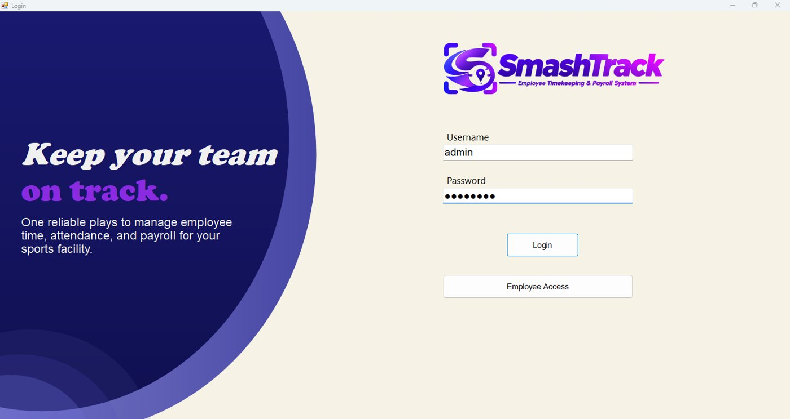
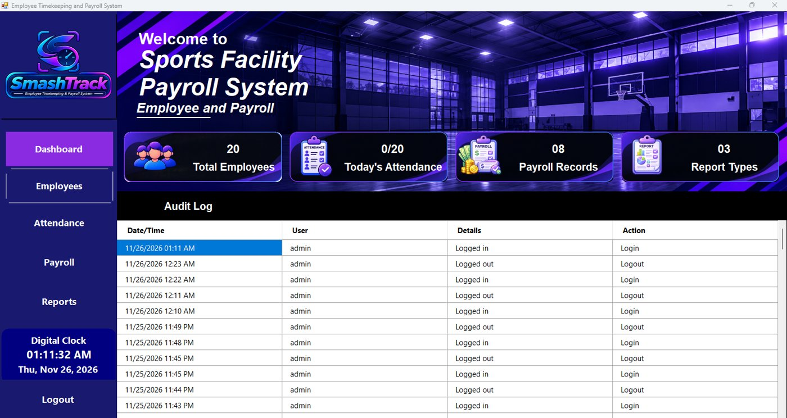
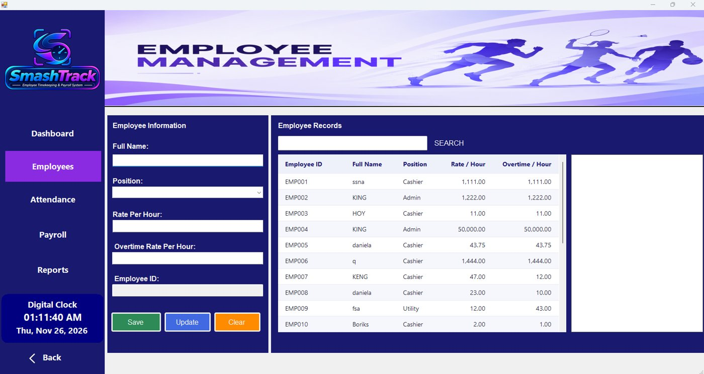
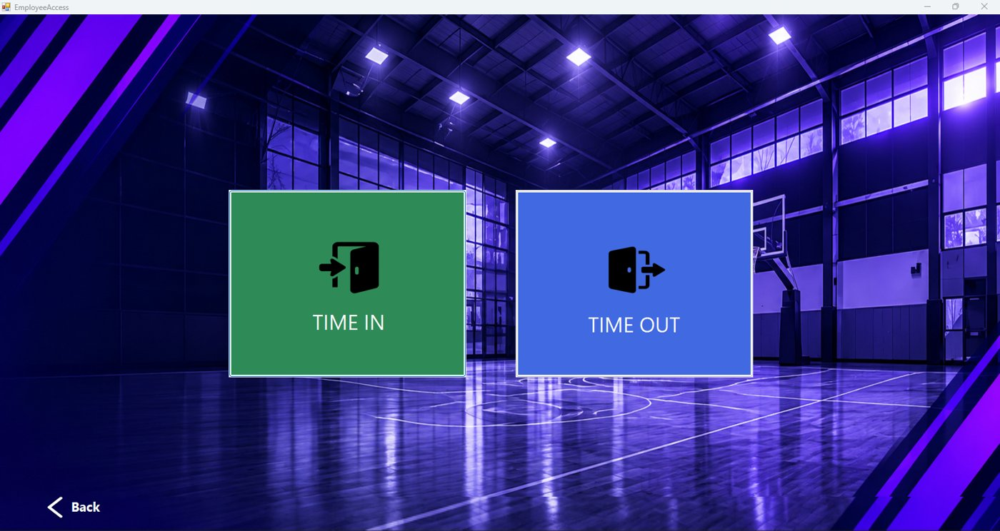
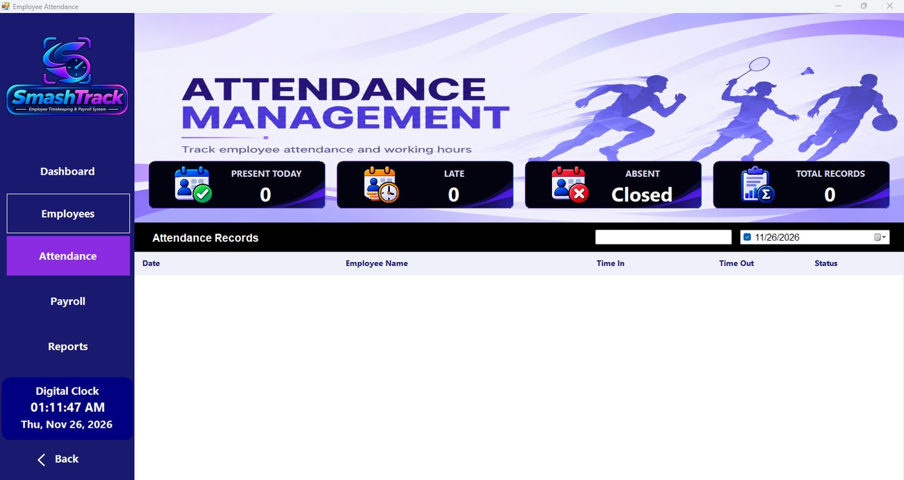
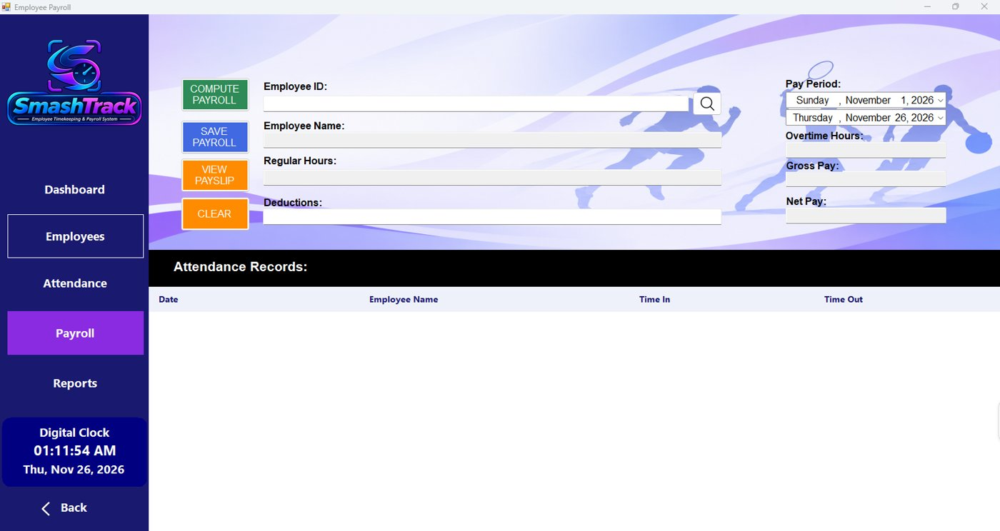
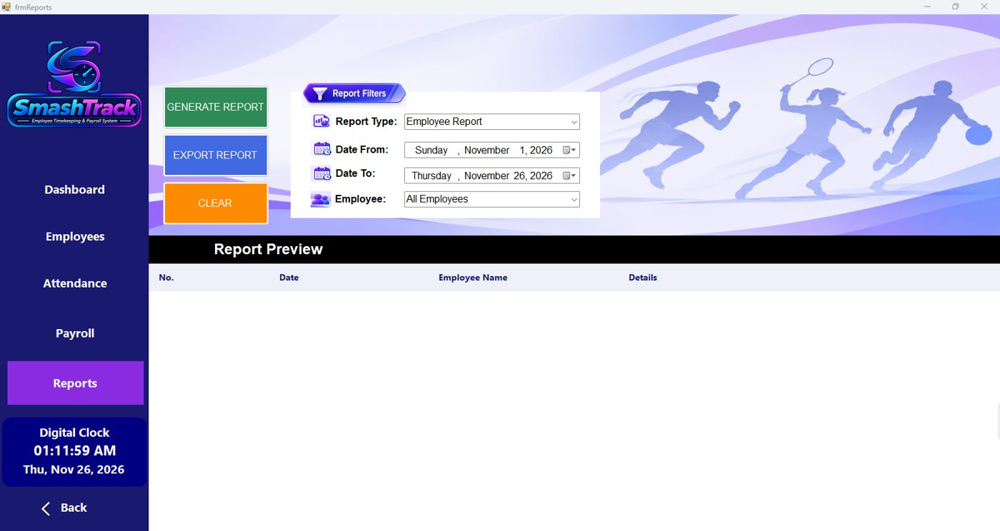

STEP 1
Secure login
Admins sign in with their own username and password. Employees go straight to Employee Access.

STEP 2
Dashboard
Live totals for employees, attendance, payroll records and reports, with an audit log of every action.

STEP 3
Employee management
Register employees with a position, hourly rate and overtime rate. Admin positions also get a login account.

STEP 4
Time In and Time Out
Employees record their attendance in one tap.

STEP 5
Attendance management
Present, Late and Absent counts, with search and a date filter.

STEP 6
Automatic payroll
Regular hours, overtime, gross pay, deductions and net pay, with a printable payslip.

STEP 7
Reports
Employee, attendance and payroll reports for any date range, ready to export.